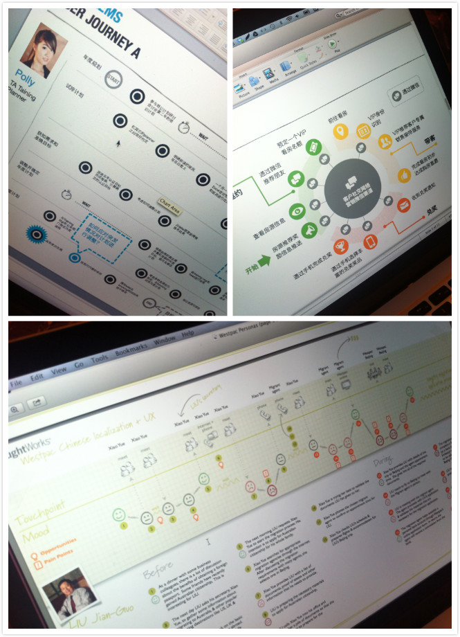
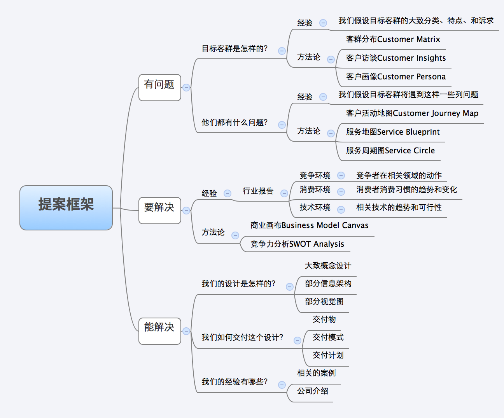

作为设计师，我的工作是帮助客户解决问题。一般来说，在你接到一个设计项目之前，你需要用你仅有的一点上下文，去设计一个看起来足够产生合作机会的设计提案，这就是本文的主题，我将分享我如何写一份体面的设计提案。如果你即将成为或者已经是设计类咨询公司的一员，下面的这些建议将对你有帮助。
设计提案的策略
与产品设计一样，你必须给你的设计提案制定一个策略，通俗地说，策略是你一步一步促使客户最终为设计项目买单的计策。就像我们思考一个在线车险报价的流程时分析跳出原因一样—思考客户为什么“跳出”而不会为接下来的设计项目买单—帮助我们思考提案策略。
想想作为客户你为什么不为将来的设计项目买单：
- 我们没有这样的问题需要解决；
- 这不是现在需要解决的问题；
- 你们没能力解决这个问题；
- 你们太贵；
另一方面，这些使得客户“跳出”的因素本身具有顺序性，我们的策略也应该按照这个顺序进行有针对性的设计。
因此，对应的策略是让客户意识到：
- 唔，我们好像有这个问题；
- 嗯，我们现在是该解决这个问题；
- 哦，他们好像能解决这个问题；
- 唉，暂时别考虑钱的问题；
接下来我们看，在战术级别上如何实现这四个策略。
使用经验和方法论
大部分的情况是，客户总觉得有问题存在，可他们对问题的定义总是：“我们的问题是缺少一个像XX一样的解决方案”，但事实上问题的根源可能跟XX解决方案要解决的风马牛不相及。
这种情况的风险是：你规划的解决方案和XX并不像；其次，你在和市面上成熟的解决方案在竞争。而事实上，我所接触的客户，已经慢慢开始转变自己的思维，从以往在解决方案上大而全的高投入，转为更加理性地思考真正的价值点，究其原因是大而全解决方案后期的维护成本甚至高于问题本身造成的损失。
在这样的背景下，设计咨询公司需要做的是让客户意识“对问题的精准定位超过解决方案”—让客户从问题出发而非解决方案的本质是提升服务型公司（咨询公司）的竞争力而压低产品型公司（解决方案公司）的竞争力。
任何一家咨询公司的办法都无外乎两个：
- 经验：列举行业内，同等规模的企业大致可能遇到什么样的问题？
- 方法论：通过方法论，可以分析和定位出更多真实存在的问题；通过方法论，可以更高效和有效地解决被识别的问题。
换句话讲，是告诉客户“基于我们对贵行业的经验，我们觉得你可能遇到如下的问题，但是问题也会因具体情况而异，我们的方法论帮助我们一起找到贵企业更加准确的问题，并解决”。
很自然，要成为一个好的提案设计师，你必须具备两个方面的技能：
- 经验：积累不同行业或领域出现的问题，这需要大量的阅读和一线的行业经验，考虑到时间和精力有限，专注在几个核心行业或领域；
- 方法论：不但要能灵活使用方法论，也需要将方法论的逻辑关系、思维过程阐述得清楚明白，关于定位问题的方法论有很多，它们的本质都是尽可能还原上下文（discover insights），在上下文中定位问题（define problem），常用的有如：Customer Journey Map, Service Touchpoints, Service Circle Map等（图1中所示）；另一方面，清晰阐述未来当问题被发现和定位，方法论（流程）将如何帮助我们高效和有效地解决这些问题。 design-methodology

图1：使用各种上下文+问题类型的方法创造使用情境并定义问题。
通过经验和方法论，我们首先让客户意识到，唔，我们好像确实有这些问题，比起臆想的解决方案，更重要的是问题的明确。接下来，我们得驱使客户下决心解决这些问题。
行业研究
关键是不要让客户觉得自己是“第一个吃螃蟹的人”。必要的行业研究在这里显得非常重要，它帮助客户从竞争环境、消费环境、技术环境多个维度理解当前解决某个范畴问题的及时性。
需要注意的是，这只是一份设计提案，你需要把握好研究的细节程度，重点体现三个维度的研究结果：
- 竞争环境：竞争关系企业在做什么，面对相同的问题，它们的应对措施有哪些？
- 消费环境：终端消费者在做什么，他们的使用习惯发生了什么样的变化？
- 技术环境：这一领域相关的技术发生了什么变化？趋势是是什么？对成本有什么影响？
关于行业研究的收集可以有多种方式，我常用的手法有：
- 关注各大咨询公司公开的行业报告，很多报告需要收费，但是摘要章节中已经有很多在设计提案这个层次上足够的数据；
- 使用搜索引擎，互联网上存在大量行业数据报告，少加细心搜索就能得到很多；
- 在slideshare类型讲演报告网站上搜索，在很多专业报告里都有一些相关趋势数据可以参考；
- 养成积累的习惯，比如你的客户是A，可以使用Google Alert订阅A企业的竞争对手B的相关动作，进行积累，需要的时候在gmail中进行搜索；
- 在微博上关注一些行业分析相关的微博，经常有一些重量级的研究报告，收集一些这样的报告，需要的时候截取。
需要注意的是，我们并不是直接亲自进行研究活动，而是采用别人的数据，我们需要将数据保存，采用自己的形式进行包装和组织，而不是一味简单的复制粘贴，有时，我们需要把多个报告中的数据重新设计，这样才能兼顾数据的真实性和展现的有效性。
通过行业研究和相关数据的展示，我们的客户开始意识到，嗯，现在好像是解决这些问题的时候了。那么接下来的疑问是：“我们怎么相信你们有资质解决这些问题呢？”
设计能力是综合性的
首先要明确的是，绝大部分的情况下，这个提案处于销售进入后的第二环节，也就是说，客户对你公司的资质已经有了一定了解—你们和设计小广告或是168元建站的公司有着本质区别。这时候，你所需要展示的设计能力是综合性的，它包含两个方面：提案本身的设计能力，以及案例
关于提案报告的设计有如下几点：
- 提案的阅读者是决策者，没有人愿意读长篇累牍的WORD文档；
- 提案极少使用幻灯片播放，请避免使用任何自作聪明的动画；
- 提案最好具备出版物的质量，纸质提案有可能流传到你客户的其他部门产生出乎意外的结果；
- 提案要展示信息设计能力，对于板式、颜色、字体、文案都有较高要求；
- 提案是第一次为客户交付的交付物，就像菜单决定了餐馆品味一样（图2所示）；
图2：提案的设计体现了设计公司的层次和能力，把提案设计当成非常重要的交付物。
关于案例有如下几点：
- 过多的案例虽然能够提升客户对你的信心，但也会降低你的议价能力—客户会认为你做得越多成本越低，议价空间越大；
- 展现案例执行过程而不是简单的结果，过程的展示让客户感觉你们有行业经验但是解决的问题有些不大一样，缩小你的议价空间；
- 展示方法论的有效性，不要忘记你的案例要体现方法论——描述方法论是如何帮助你在以前的项目里发现和定位问题，以及方法论是如何帮助你解决这些问题的。
设计能力体现在整个服务过程的每一个接触点上，而不仅仅是最后那个最终交付物上。当你的客户已经从你的提案中慢慢承认了你的设计能力时，阻挡他进入下一个环节的东西只有价格了。
避谈钱
对于价格的问题，最好的战术就是避而不谈。以下内容可能影响你的议价能力的有如下几点：
- 千篇一律的公司介绍；
- 拼凑的、看起来大同小异的案例介绍；
- 低劣的PPT；
你需要做的是让客户认为你是市场上最优秀的以及最合适的选择，而价格的问题交给销售去解决。
一个基本设计提案框架
理解了一个提案的基础策略和相关战术之后，一个基本的提案框架应该是怎样的？我经常采用三段式：有问题、要解决、能解决，贯穿经验假设和方法论两个维度的架构，如图3所示脑图，图中的方法论不代表全部，只做举例：

图3：一个基础的设计提案框架，帮助快速建立一个全面的设计提案。
写在最后
设计提案的目标是获得接下来的设计项目，你仅需要保证客户对你和你的团队产生足够的信任便可，注意，并不是你的设计。请不要过度纠结于设计是否正确，客户关心的是你对他们问题的分析能力以及分析方法，并在提案过程中展示设计能力，它的展示方式不止限于提案中仅有的篇幅表达设计概念，也可以从整个提案设计的包装、以及以前经验中体现。
而设计提案本身也是锻炼系统化产品思维的好方式，产品本身，是资源通过某种设计为某类客户解决某个问题的一整套体系，而绝不仅仅是设计本身。从这里你将学习如何准确分析和定位问题、如何不断演进你的方法论、如何在市场趋势中寻找策略点、如何抽象你的设计让客户直观理解、如何计划和交付你的设计、如何通过策略让客户买单，这些都是策略规划、产品规划者必备的技能。
因此，这些经验不止对以设计咨询为主的咨询公司有帮助，对于产品公司内部的产品规划，也会有帮助。最后，请注意，这只是我对工作的定期总结，在我看来，任何被总结出来的所谓“干货”，都像是褪去的蝉甲，行将就木。